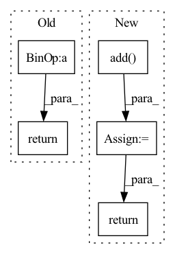

Pattern ID :1508

Before Change
conv4 = self.conv4(torch.cat((x, conv1, conv2, conv3), dim=1))
conv5 = self.conv5(torch.cat((x, conv1, conv2, conv3, conv4), dim=1))
return conv5 * self.scale_ratio + x
class ResidualInResidualDenseBlock(nn.Module):
After Change
conv4 = self.conv4(torch.cat((x, conv1, conv2, conv3), dim=1))
conv5 = self.conv5(torch.cat((x, conv1, conv2, conv3, conv4), dim=1))
out = torch.add(conv5 * self.scale_ratio, x)
return out
class ResidualInResidualDenseBlock(nn.Module):
In pattern: SUPERPATTERN
Frequency: 3
Non-data size: 5
Instances
Fragment ID: 5084249
Project Name: lornatang/esrgan-pytorch
Commit Name: 3732262b2fda2eb2af12f45737db6eb2a4aa9b87
Time: 2021-06-15
Author: liuchangyu1111@gmail.com
File Name: esrgan_pytorch/models/utils.py
M Class Name: ResidualDenseBlock
N Class Name: ResidualDenseBlock
M Method Name: forward(2)
N Method Name: forward(2)
M Parent Class: nn.Module
N Parent Class: nn.Module
M File Name: esrgan_pytorch/models/utils.py
N File Name: esrgan_pytorch/models/utils.py
M Start Line: 69
M End Line: 71
N Start Line: 72
N End Line: 76
'>
Before Change
out = self.conv2(out)
out = self.bn2(out)
return out + input
def _gan(arch, pretrained, progress):
After Change
out = self.conv2(out)
out = self.bn2(out)
out = torch.add(out, x)
return out
def _gan(arch: str, upscale_factor: int, pretrained: bool, progress: bool) -> Generator:
'>
Fragment ID: 5084251
Project Name: lornatang/srgan-pytorch
Commit Name: b5202afdd623be9d04d4f9345aee6cfbdc5154d7
Time: 2021-03-11
Author: liuchangyu1111@gmail.com
File Name: srgan_pytorch/models/generator.py
M Class Name: ResidualBlock
N Class Name: ResidualBlock
M Method Name: forward(2)
N Method Name: forward(2)
M Parent Class: nn.Module
N Parent Class: nn.Module
M File Name: srgan_pytorch/models/generator.py
N File Name: srgan_pytorch/models/generator.py
M Start Line: 111
M End Line: 113
N Start Line: 116
N End Line: 120
'>
Before Change
out = self.RDB2(out)
out = self.RDB3(out)
return out * self.scale_ratio + x
After Change
out = self.RDB2(out)
out = self.RDB3(out)
out = torch.add(out * self.scale_ratio, x)
return out
'>
Fragment ID: 5084250
Project Name: lornatang/esrgan-pytorch
Commit Name: 3732262b2fda2eb2af12f45737db6eb2a4aa9b87
Time: 2021-06-15
Author: liuchangyu1111@gmail.com
File Name: esrgan_pytorch/models/utils.py
M Class Name: ResidualInResidualDenseBlock
N Class Name: ResidualInResidualDenseBlock
M Method Name: forward(2)
N Method Name: forward(2)
M Parent Class: nn.Module
N Parent Class: nn.Module
M File Name: esrgan_pytorch/models/utils.py
N File Name: esrgan_pytorch/models/utils.py
M Start Line: 94
M End Line: 96
N Start Line: 99
N End Line: 103